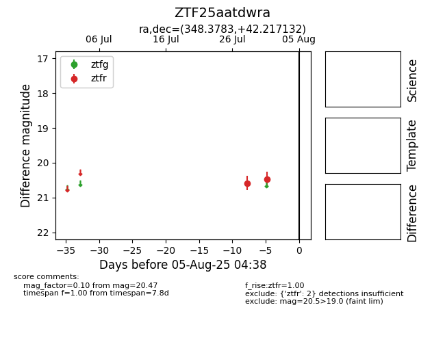

Target ZTF25aatdwra at 2025-08-05 04:38, see:
FINK: fink-portal.org/ZTF25aatdwra
Lasair: lasair-ztf.lsst.ac.uk/objects/ZTF25aatdwra
ALeRCE: alerce.online/object/ZTF25aatdwra
alt names
ZTF25aatdwra (ztf,fink)
coordinates:
equatorial (ra, dec) = (348.3783,+42.21713)
galactic (l, b) = (104.2062,-17.06619)
photometry
last ztfr=20.47
2 ztfr detections
